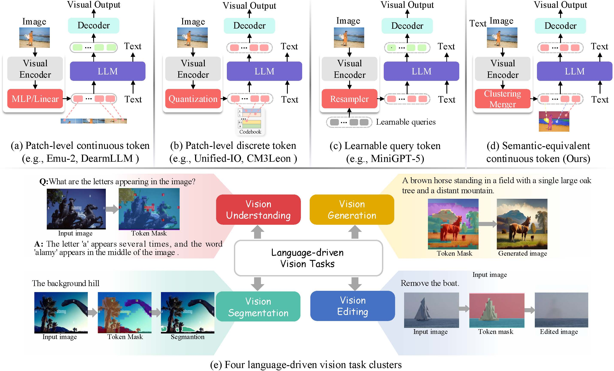

About
I am a Postdoctoral Researcher in the Department of Computer Science, University of Oxford, working with Prof. Michael Wooldridge. I obtained my Ph.D. at the NExT++ Research Center, advised by Prof. Tat-Seng Chua in the School of Computing, National University of Singapore. I received my M.S. and B.S. degrees from Wuhan University.
My research works toward general multimodal intelligence, currently along the following directions:
- Multimodal Foundation Models NExT-GPT, SeTok, AD-Loop, Awesome-A2A, JavisGPT
- Multimodal Agents UniVA, DACo
- Cross-modal Modeling & Reasoning PolyV, USG, PSG-4D-LLM, Awesome-SG, MM-CoT Survey
- Vision Generation (Physics-grounded) Any2Caption, ReaDe, JavisDiT
- Spatial Intelligence SCP, 4D Panoptic Scene Graph, DACo
I am always happy to discuss potential collaborations — feel free to drop me an email.
News
- 2026/05We are organizing the IJCV Special Issue on MUCG — submissions welcome!
- 2026/05Co-organizing the Joint Audio-Video CG Workshop @ ACM MM 2026 — submissions welcome!
- 2026/05Released what we believe is the first comprehensive survey on Audio-Visual Intelligence (AVI) in the era of large foundation models.
- 2026/01Co-organizing the Workshop on Any-to-Any Multimodal Learning at CVPR 2026. Submissions and presentations welcome!
- 2026/01Maintaining a repo on Any-to-Any Multimodal Generation — contributions welcome.
- 2025/11We developed UniVA, a universal video agent toward an open-source next-generation video generalist.
- 2025/10Co-organizing the Workshop on Scene Graph on Structured Intelligence at WACV 2026.
- 2025/06Launched open discussions on the future of scene graphs and scene understanding.
- 2025/06Hosting a grand challenge in the MUCG Workshop — top teams receive certificates and cash prizes.
- 2025/05Organizing the 1st MUCG Workshop: MLLM for Unified Comprehension and Generation at ACM MM 2025.
- 2025/05ICML'25 Spotlight: Path to Multimodal Generalist: General-Level and General-Bench — a new evaluation paradigm for multimodal generalists.
- 2025/03Released the first survey on multimodal chain-of-thought reasoning.
- 2025/03Volunteering at ICLR 2025; SeTok accepted at ICLR'25.
- 2025/02Two full papers accepted at CVPR 2025: Universal Scene Graph Generation and 4D Scene Graph Generation.
- 2025/02Welcome to SSNLP-25 — free registration!
- 2024/12Maintaining Awesome-Scene-Graph-Generation-and-Application — contributions welcome.
- 2024/12One paper on mitigating hallucination in MLLMs accepted at AAAI-25.
- 2024/08Volunteering at ACL 2024.
- 2024/08Building NExT-GPT in PaddlePaddle / PaddleNLP / PPDiffusers.
- 2024/05Two full papers accepted at ICML-24: NExT-GPT and Video-of-Thought.
- 2024/04Released Vitron (Demo, Paper, Code), a universal pixel-level vision LLM.
- 2024/02One full paper accepted at CVPR-24 on text-to-video generation.
- 2024/01Honored with the Baidu Scholarship (10 recipients worldwide).
- 2023/12Passed my research-based QE — now a Ph.D. candidate.
- 2023/11Joined Kunlun 2050 Research as a research intern, advised by Prof. Yan.
- 2023/10Built NExT-GPT, a general-purpose any-to-any MLLM.
- 2023/09One full paper accepted at NeurIPS-23 on intricate text-to-image generation with scene graphs.
- 2023/07One full paper accepted at ACM MM-23 on high-faithful text-to-image generation.
- 2023/05Two full papers accepted at ACL-23: Multimodal Relation Extraction and Image Captioning.
- 2022/07Heading to SoC NUS to pursue my Ph.D.
Representative Work
View all publications →
Any2Caption — a SoTA framework for controllable video generation from any condition, the first to leverage MLLMs to interpret diverse inputs into dense, structured captions.
[PDF] [Project] [HF] [Video]
[PDF] [Project] [HF] [Video]
